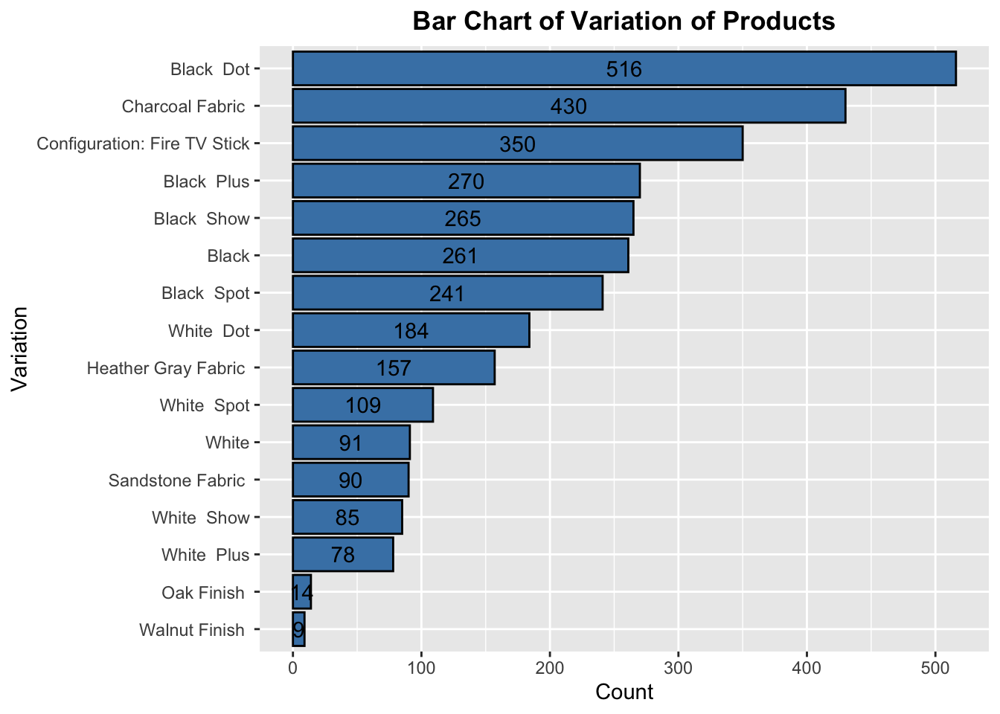

Amazon Alexa Products Analysis
Amazon is well-known for selling products on its website. For this analysis, we'll be focusing on Amazon Alexa products (products that has a virtual assistant AI named Alexa), including products like the Amazon Echo, Amazon TV Sticks, etc. We'll analyze a dataset containing reviews of these Amazon Alexa products and observe what customers think about the products.
To view the project with all the source code, click here. For the GitHub repository, click here.
Data source: https://www.kaggle.com/sid321axn/amazon-alexa-reviews
Outline of Analysis:
- Get a high level understanding of the data (shape, columns, data types, range of fields, etc.)
- Looking at ratings and reviews by quantity or average
- Observing variations of products
- Comparing length of reviews vs. ratings
- Getting a closer look into what reviews are saying
Part 1: Understanding the data
| Column | Definition |
|---|---|
| rating | Rating of the product on a 5-star rating system |
| date | Date of the review |
| variation | Variant of the product |
| verified_reviews | Customer's review of the product |
| feedback | 0 if negative review, 1 if positive review |
Importing the packages needed:
library(tidyverse)
library(RColorBrewer) # color palettes
library(tidytext)
library(wordcloud)
library(grid) # grid packages to plot side-by-side plots
library(gridExtra)
library(lubridate) # for working with date objectsLoading the data:
# read and store data into the DataFrame
df <- read.csv("amazon_alexa.tsv", sep = "\t")
# transforming the field verified_reviews into character
df <- transform(df, verified_reviews = as.character(verified_reviews))Here, we will get ourselves familiar with the data by exploring how many rows and columns there are, the variable types, etc.
## Rows: 3,150 ## Columns: 5 ## $ rating <int> 5, 5, 4, 5, 5, 5, 3, 5, 5, 5, 5, 5, 5, 5, 5, 5, 5, 5… ## $ date <fct> 31-Jul-18, 31-Jul-18, 31-Jul-18, 31-Jul-18, 31-Jul-1… ## $ variation <fct> Charcoal Fabric , Charcoal Fabric , Walnut Finish , … ## $ verified_reviews <chr> "Love my Echo!", "Loved it!", "Sometimes while playi… ## $ feedback <int> 1, 1, 1, 1, 1, 1, 1, 1, 1, 1, 1, 1, 1, 1, 1, 1, 1, 1…
There are 3150 rows and 5 columns in our dataset.
Next, let's check some of the rows of our data and the summary statistics of the entire dataset.
## rating date variation ## 1 5 31-Jul-18 Charcoal Fabric ## 2 5 31-Jul-18 Charcoal Fabric ## 3 4 31-Jul-18 Walnut Finish ## verified_reviews ## 1 Love my Echo! ## 2 Loved it! ## 3 Sometimes while playing a game, you can answer a question correctly but Alexa says you got it wrong and answe rs the same as you. I like being able to turn lights on and off while away from home. ## feedback ## 1 1 ## 2 1 ## 3 1
## rating date variation ## 3148 5 30-Jul-18 Black Dot ## 3149 5 30-Jul-18 White Dot ## 3150 4 29-Jul-18 Black Dot ## verified_reviews ## 3148 I do love these things, i have them running my entire home, TV, all my lights, my thermostat, my front do or dead bolt, the cameras... and i love listening to npr. these things are well worth the value and they really s hine once you stat adding smart devices and you can control your entire home like its right out of star trek.... I named mine computer to get the feel... but its amazing what you can do with these devices and smart systems. ## 3149 Only complaint I have is that the sound qual ity isn't great. I mostly use it for commands though, and I have another dot hooked up to my stereo system to pla y music through. I have a couple friends that have a dot and don't mind the audio quality, but if you're bothered by that kind of thing I'd go with the full size echo or make sure you hook the do up to some larger speakers. ## 3150 Good ## feedback ## 3148 1 ## 3149 1 ## 3150 1
## rating date variation ## Min. :1.000 30-Jul-18:1603 Black Dot : 516 ## 1st Qu.:4.000 29-Jul-18: 482 Charcoal Fabric : 430 ## Median :5.000 28-Jul-18: 250 Configuration: Fire TV Stick: 350 ## Mean :4.463 26-Jul-18: 85 Black Plus : 270 ## 3rd Qu.:5.000 31-Jul-18: 81 Black Show : 265 ## Max. :5.000 25-Jul-18: 43 Black : 261 ## (Other) : 606 (Other) :1058 ## verified_reviews feedback ## Length:3150 Min. :0.0000 ## Class :character 1st Qu.:1.0000 ## Mode :character Median :1.0000 ## Mean :0.9184 ## 3rd Qu.:1.0000 ## Max. :1.0000 ##
Just by observing the summary statistics, we see that the mean of the rating and feedback are quite high. We will observe this further in our exploratory data analysis later.
## rating ## 1 5 ## 3 4 ## 7 3 ## 47 2 ## 142 1
Ratings on this data only take in whole number values from 1 through 5. Note that the index number just represents the index of the row where each unique rating is first encountered in the dataset.
Now, is there any association between rating and feedback? As noted, a value of 0 for feedback means that the feedback as negative, and a value of 1 for feedback indicates a positive feedback.
## # A tibble: 2 x 3 ## feedback minimum_rating maximum_rating ## * <int> <int> <int> ## 1 0 1 2 ## 2 1 3 5
It seems that negative feedbacks only have ratings of either a 1 or a 2, and positive feedbacks have ratings of 3 or higher.
Next, let's check the range of dates of the date field.
## earliest_date latest_date ## 1 2018-05-16 2018-07-31
The range of dates of the entire dataframe are all in the year 2018 from the months of May to July.
# check for missing values
sum(is.na(df))## [1] 0
There are no missing values on the data, so we do not have to worry about working with them.
Part 2: Measuring Ratings and Reviews
How are the ratings distributed for Amazon products? Which rating occurs most often?
Let's start by looking at a bar chart of the ratings to see what people think of Amazon Alexa products.
There is a large number of people who rated Amazon products with a 5. A rating of a 4 falls second by a large margin compared to ratings of a 5. It seems like the majority of customers who have reviewed the products are satisfied with their purchase.
How often were reviews written on each month and each day of the week?
Most of the reviews from the data were written on the month of July. This graph could just have been a result of how the data was originally extracted.

Most reviews were written on Mondays and Sundays. A plausible explanation for this could be that most people order products on Fridays or during the weekend. And since Amazon guarantees a 2-day delivery date for customers who are members of Amazon Prime, people will write their reviews on Sunday or Monday, the same day they receive their delivery.
What were the average ratings by month or day of week?
The average ratings are quite similar to each other, with ratings from each month being higher than 4.00 and July having the highest rating of all months. Though, we should be careful with comparing July to the other months since July had much more reviews than May and June.
Average ratings are all above 4.00 and are not too much different from each other. The highest average ratings occur on the weekend, Monday, and Wednesday, where each ratings are around 4.5. Reviews written on Thursdays and Fridays have the lowest average ratings.
Part 3: Looking at the different variations of Amazon Products
Let's observe if there are any specific variations that customers prefer over the other.
Which variation are most frequently rated, and which have the highest average rating?
The bar chart shows that customers in the dataset have mostly bought black-colored products.
All products have average ratings of more than 4.00. Highest average rated products seem to be Walnut Finish and Oak Finish, but note that these products didn't have much reviews to begin with as shown in the bar chart of variation of products. Fabric products are the next highest average rated products and have much more reviews than the Finish products.
Part 4: Length of Reviews
What is the distribution of the length of reviews?

Most reviews seems to be below 50 words, but there are some huge outliers with length of reviews beyond 100 words. We can filter out outliers using the Interquartile Range Rule and plot another histogram to better see the distribution of length of reviews.
We can tell that most reviews are pretty short with word counts of less than 20.
Most reviews are short in terms of amount of words it has, regardless of what the rating seems to be. Let's examine the boxplot closer by filtering using the same IQR rule on review length.
Reviews rated with a 2 are generally the longest reviews compared to other reviews. Reviews that have a rating of a 5 tends to be the shortest.
Part 5: What are reviews saying?
What are some of the most commonly used words in reviews of Amazon products by positive and negative reviews?
In the word cloud above, the most used words are indicated by size. So larger sized words mean higher counts, and smaller sized words mean lower counts. Also, the words are colored by sentiment where the green-colored words are positive words and red-colored words are negative. For the most part, we can see that Amazon products are liked by customers, where they used words such as "love" and "great" in their reviews.
Let's see the actual numbers by looking at bar charts of the amount of times these words occur.
Words like "love" and "great" do indeed take the top spots for most frequently used positive words in reviews, as we speculated from the word cloud. Moreover, these positive words have high counts, so it seems that Amazon products are doing great overall.
If we look at the negative words, we see that there are indeed words that can be considered negative such as "issues" and "problems", but the word "alarm" might be an invalid word to be classified as negative, so this is a word on the bar chart that we should be careful about.
Still, the word counts of negative words are quite low, so there seem to be far less customers who said negative things compared to customers who said positive things about the Amazon products in their reviews.
Conclusion
Overall, it seems like customers are satisfied with their Amazon Alexa products. We measured the ratings and reviews and observed that most reviews gave a rating of 5. Ratings among the variation of products are quite similar to each other and are all doing well. Generally, lower ratings have higher word counts than higher ratings. Also, many reviews have left positive feelings about the Amazon products indicating that the customers loved and think that the products are great. But there are reviews in the other hand that have given negative feedback saying that the customers has issues or problems and are disappointed with their purchase.